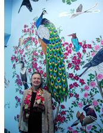

Opening reception:
Friday March 5, 2010, 5 - 8 P.M.
Show Dates:
March 3, 2010 - April 17, 2010
Nan Freeman: Process
Nan Freeman Master Drawings: Process March 2010
"Nan Freeman Master Drawings: Process" presented the drawings which Nan Freeman created for her public art project "Bridge of Hope". This never-before-exhibited work is delicate yet wondrously strong, full of energy and life. The process drawings are the very soul of the bird series. Opening of this fabulous work was on Friday March 5, 2010, 5 - 8 P.M.
This solo exhibition was available from March 3, 2010 until April 17, 2010 at NKG 460 Harrison Avenue, Boston, MA 02118
Artist Statement
Drawing has always been central to my practice as an artist, and I have habitually presented drawings, works in dry media on paper, as major works in my exhibitions and commissions for many years. But the works presented this spring in the NK Gallery show have been selected to highlight the process of drawing: its nature, and the role it plays in the generation of visual art works of all kinds. The pieces chosen here represent working drawings of various types, along with finished drawings derived from them, and also paintings generated in the same developmental cycle.
The bird drawings in this exhibition emerged within the planning, development, and formational stages of my enormous Bridge of Hope mural painting at Boston's Brigham and Women's Hospital. The Bridge of Hope, completed in 2005 and now one of Boston's most prominent works of painting on permanent public view, occupies two hundred feet of architectural interior on the third floor of 75 Francis Street, connecting the Brigham with the Dana Farber Cancer Center. This mural features flying birds, each one carrying a sprig of plants historically associated with medicine: visitors to the Bridge of Hope will recognize its bird images based in drawings shown here.
The creative process by which I developed the Bridge of Hope paintings evolved through many artistic processes over a period of three years, involving many kinds of drawing. Not included here are my very numerous rough sketches and studies for every bird and plant, field studies, compositional studies, detail studies, anatomical information and the various site drawings, scale models and interior perspective drawings through which I introduced, critiqued, refined, and finalized the mural as a whole within its architectural setting. The NK Gallery selection features the birds' master drawings: line drawings in pencil on heavy paper in which I worked out the exact final characteristic of each bird figure in pose and anatomical detail. As in all naturalistic depictive drawing based on objects in nature, I used real models, with a vast combination of source material ranging from anatomical drawings and wing specimens to motion diagrams and stop-action field-photos of birds in rapid flight. The plants were mainly drawn directly from living samples. Along with these master drawings are examples of art works based on them: a few of the fully-finished charcoal drawings (presentation drawings) for each bird, and some of the study paintings in full color made to establish for my patrons and assistants the style and appearance the mural's final versions would have.
The process by which my fully worked-out master drawings were transferred to their sites on the mural wall was a complex one; an old but effective method. Once I developed each master drawing to my satisfaction in both its great structure and detail, it could be traced onto a thin piece of transparent paper to create a transfer drawing (traditionally called a 'cartoon'). I have included in this exhibition a set of cartoons used in my work on the grand set of finished candelabra drawings for the Gibson House. The finished transfer drawings for the birds, backed with carbon transfer material, were attached to the mural wall in their proper places and traced again, leaving their image transferred to the wall. The resulting drawing, after two cycles of tracing, was much degenerated: I re-drew each of these again as a fine brush-drawing in blue paint, after which I completed them as the finished wall paintings.
My purposes in drawing from models in nature, and in the artworks that result, is to engage intensely my models' visible appearance, and to also convey their evocative weight and power as I experience them. As well as from the objective, outward-directed observation of models, I draw and paint from the inner, reflexive, dimension of my experience with them. My art process involves, in a way that cannot be mutually disengaged, powerful and deep-going physical intellectual, and emotional processes.
Regarding drawing from models, I am baffled to frequently hear people say 'drawing is a way of seeing', because this is not true. Drawing is not seeing, drawing is making. Drawing from visual models involves seeing, but it goes far beyond that: seeing is an act of perception, an intake of information; drawing is not an act of absorption but an act of creation. Seeing acutely is a great virtue and fundamental tributary activity supporting drawing, but is perception, and no matter how fine-grained and accurate the act of perception may be, nothing has yet been made. Drawing is an act and a process of generating and organizing visual form. Drawing requires being able to formulate, articulate, shape, design, and construct. Those processes, fundamental to the creation of all visual form, whether by conventional means of marks on paper or other processes and media, are the aspects of drawing I wish to emphasize in the work presented here.
-Nan Freeman 2010
{kind=link}
{kind=link}
{kind=link}
{kind=link}
{kind=link}
{kind=link}
{kind=link}
{kind=link}
{kind=link}
{kind=link}
{kind=link}
Biography
Nan Freeman was born in Houston. She is widely known for her dramatically large drawings which carry great social and cultural potency. She sustains an active record of exhibitions nationally and internationally including recent one-person exhibitions in: The Museum of Fine Arts Boston; The Cheekwood Museum Nashville; The Gibson House Museum Boston; The Baer Art Centre, Hofsos Iceland; Galerie Nev Istanbul, and Galerie al Riwaq, Manama Bahrain. Her works are in numerous public and private collections worldwide. Permanent public art projects include her "Bridge of Hope" mural at the Brigham and Women's Hospital Boston. Freeman earned her undergraduate degree at Smith College, her Master's at the University of Pennsylvania, and her PhD at the Massachusetts Institute of Technology, in the Department of Architecture. She has taught at Harvard University, The Massachusetts Institute of Technology, Wellesley College, Brandeis University, the Faculty of Fine Arts of the University of Marmara in Istanbul, and Bogazici University in Istanbul. Currently she is senior faculty at the School of the Museum of Fine Arts Boston. Nan Freeman writes and speaks frequently on her own work, on contemporary art and artists, and on topics in popular culture, most recently Blue Jeans; America's National Pants (2007).